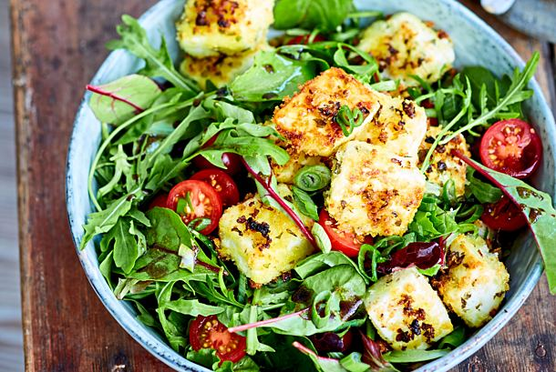

<ion-header [translucent]="true">
  <ion-toolbar>
    <ion-title>Persönliches</ion-title>
  </ion-toolbar>
</ion-header>

<ion-content [fullscreen]="true">
  <ion-content style="left:50%">
    <ion-avatar>
      
    </ion-avatar>
  </ion-content>
</ion-content>
